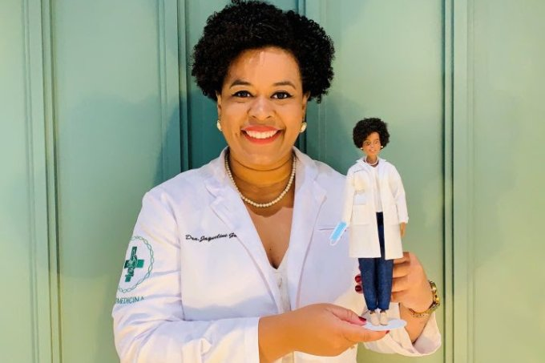

JORNAL DE G2 NEWS
Descrição
......................
...........................
O organismo internacional oferece cooperação técnica em saúde a seus países membros; combate doenças transmissíveis e doenças crônicas não transmissíveis, bem como suas causas; e fortalece os sistemas de saúde e de resposta ante emergências e desastres.
outro texto........
................. Leia mais em: https://claudia.abril.com.br/noticias/barbie-jaqueline-goes/
Edgard Piccoli conta como um grupo de pessoas tem ajudado os indígenas e ribeirinhos do Pantanal. Além de doar cestas básicas e produtos de higiene, o projeto Comitiva Esperança ajuda os moradores, inclusive depois dos incêndios que atingiram a região. No final, você vai ouvir um trecho da nova música do Kunumi MC e saber um pouco da trajetória dele como indígena compositor de raps.
Edgard Piccoli conta como o empreendedor e ativista digital Pablo Lobo conseguiu arrecadar mais de R$ 30 milhões para ajudar o Hospital das Clínicas, em São Paulo, no combate à covid-19. Tem também os bastidores de uma plataforma que luta contra o racismo na medicina, juntando profissionais negros da saúde com pacientes negros.
Algum outro texto se quiser colocar ou tirar...
Hoje, o Brasil registrou a segunda maior marca de pessoas vacinadas contra a covid-19 em um intervalo de 24 horas. No total, 2.778.682 brasileiros receberam a primeira, a segunda ou a dose única de imunizante contra a doença. Os dados foram levantados pelo consórcio de veículos de imprensa, do qual o UOL faz parte, com base nas informações fornecidas pelas secretarias estaduais de saúde. Os números computados hoje são inferiores apenas aos de 7 de julho, quando 3.391.427 pessoas foram imunizadas com alguma dose de vacina.... - Veja mais em https://www.uol.com.br/vivabem/noticias/redacao/2021/08/17/vacinacao-covid-19-coronavirus-17-de-agosto.htm?cmpid=copiaecola Saiba mais
Jaqueline Goés de Jesus, a biomédica brasileira, agora tem uma boneca Barbie em sua homenagem. A cientista foi umas das seis mulheres escolhidas pela companhia de brinquedos Mattel para ser enaltecida... Leia mais em: https://claudia.abril.com.br/noticias/barbie-jaqueline-goes/ Saiba mais 